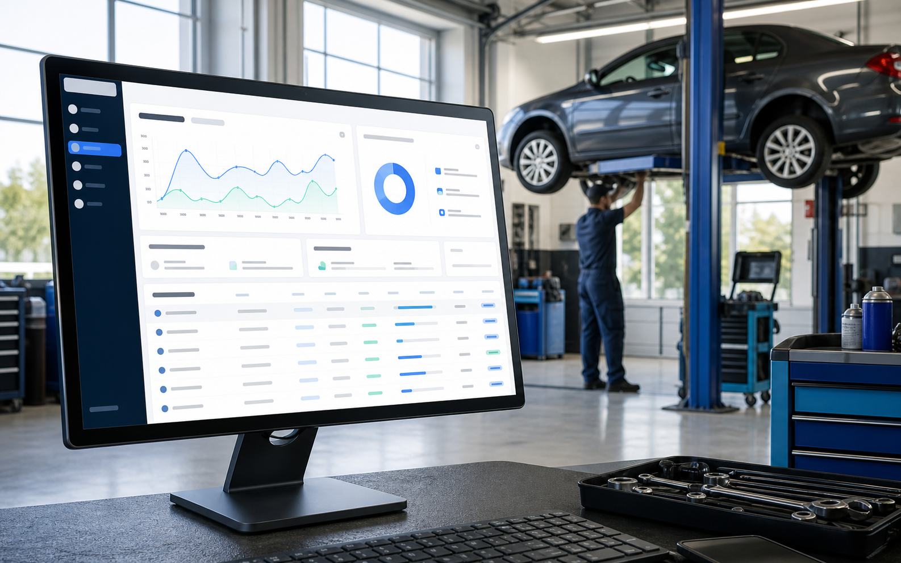

Решения для бизнеса · Казахстан
edudev
Система управления для пунктов замены масла, шиномонтажек, СТО и автомоек
Наводим порядок в клиентах, автомобилях, заказах, складе, деньгах, сотрудниках и повторных визитах. Настраиваем систему под ваш реальный процесс и запускаем команду без лишней сложности.
Внедрение под процесс
Обучение команды
4 месяца поддержки бесплатно

Учет для автосервиса
заказы · склад · деньги · клиенты
Все процессы сервиса
От записи клиента до отчета владельца — в одной рабочей системе
Система должна быть понятной администратору, полезной мастеру и достаточно прозрачной для владельца. Поэтому показываем не “много кнопок”, а ежедневные рабочие экраны.
Администратор
Оформляет визит без тетради и лишних сообщений
Клиент, автомобиль, услуги, товары, мастер, скидка и оплата собираются в один заказ.
Заказ #1842
В работе
Toyota Camry · А 777 КЗ
Клиент: Ерлан · пробег 84 200 км
МастерАзамат
Оплата24 500 ₸
Скидка0 ₸
Замена масла8 000 ₸
Масло 5W-30 · 4 л14 000 ₸
Фильтр масляный2 500 ₸
Напоминание через 4 месяцасоздано
Остатки списываются из заказа
Масла, фильтры, запчасти, химия и расходники перестают жить отдельно от продаж.
Клиентов возвращают вовремя
После замены масла, ремонта, мойки или сезона шин система ставит задачу напомнить клиенту.
Замена маслачерез 4 месяца
Сезон шин15 октября
Повторная мойкачерез 14 дней
Владелец
Видит деньги, склад и работу сотрудников
Выручка, скидки, средний чек, популярные услуги, товары и действия команды доступны без ручных сводок.
72%план
1.8 млн ₸выручка
128заказов
Почему владельцу трудно расти
Когда учет держится в тетради, таблицах и переписках, бизнес теряет деньги незаметно
Не видно реальную прибыль
Выручка есть, но непонятно, какие услуги, товары, мастера и смены действительно приносят деньги.
Склад живет отдельно
Масла, фильтры, химия, шины и запчасти считаются “на глаз”, поэтому появляются потери и зависшие остатки.
Клиенты не возвращаются
После замены масла, ремонта, мойки или сезона шин клиенту никто вовремя не пишет.
Сотрудники работают по памяти
Скидки, отмены, изменения цен и задачи остаются без прозрачной истории действий.
Система под ваш процесс
Сначала закрываем главные проблемы, потом расширяем систему по мере роста
Мы не продаем абстрактную программу и не грузим вас лишними возможностями. Сначала разбираем, где теряются клиенты, склад, деньги и время сотрудников, а затем настраиваем понятный порядок работы под ваш сервис.
Выбор разделов
Легкий старт
клиенты · авто · заказы · оплата
Сервис со складом
остатки · списания · закупки · отчеты
Рост и контроль
напоминания · отчеты · доступы · 2+ точки
Начинаем с того, что реально нужно вашему сервису
На разборе учета мы не продаем “все сразу”. Сначала выбираем рабочий набор под ваш формат, команду и текущие проблемы.
Клиенты, авто и заказы
Чтобы администратор быстро оформлял визит, а история клиента и автомобиля не терялась.
Склад и остатки
Чтобы масла, фильтры, запчасти, химия и расходники списывались из заказов и сходились по остаткам.
Напоминания клиентам
Чтобы клиенту вовремя напомнили о замене масла, сезоне шин, повторной мойке или следующем ремонте.
Деньги и отчеты
Чтобы владелец видел выручку, средний чек, скидки, сотрудников, популярные услуги и товары.
Замена масла, СТО, шины или мойка
Подбор масла, заказ-наряды, хранение шин, запись по боксам и другой порядок работы под ваш сервис.
Расширение
Запись через сайт, сообщения клиентам, перенос таблиц, фото до/после, несколько точек и дополнительные отчеты.
Выбранный набор
Клиенты, авто и заказы
Оставить заявку с этим набором
Под разные форматы
Экраны и порядок работы подстраиваются под ваш сервис
Пункт замены масла
Система запоминает автомобиль, масло, фильтры, пробег, сумму и дату следующего визита.
- Склад масел, фильтров и расходников
- Подбор товара под автомобиль
- Напоминания клиенту о повторной замене
Toyota Camry
5W-30 · 4 л
следующая замена через 4 месяца
Масло Shell 5W-3018 л
Фильтр Toyota7 шт
Работа мастера8 000 ₸
Шиномонтаж и шинный центр
Удобная сезонная запись, история комплектов, хранение шин и напоминания о переобувке.
- Размеры шин и комплекты клиентов
- Учет хранения и расходников
- Загрузка мастеров и постов
09:00R17 · хранение
10:30R16 · переобувка
12:00R18 · балансировка
14:00R15 · ремонт
Комплект клиента
205/55 R16 · склад A-12
СТО и смешанный сервис
Заказ-наряд ведет клиента от жалобы и диагностики до работ, запчастей, оплаты и отчета владельцу.
- Работы и запчасти отдельно
- Статусы ремонта и ответственные мастера
- Прибыль по заказам, работам и товарам
Принят
В ремонте
Готов
Жалоба клиентастук подвески
Работазамена стойки
Запчасть2 шт · склад
Итого46 000 ₸
Автомойка и детейлинг
Запись по времени, боксы, услуги, абонементы, постоянные клиенты и контроль смен.
- Календарь записей и загрузка боксов
- Пакеты, абонементы и акции
- Отчеты по услугам и сотрудникам
Бокс 110:00 комплекс11:00 свободно
Бокс 210:30 детейлинг12:00 химчистка
Бокс 309:30 экспресс11:30 абонемент
Выручка смены185 000 ₸
Реальный день сервиса
Один заказ проходит через клиента, склад, оплату и повторный визит
Клиент приехал
Администратор находит клиента по телефону или госномеру и сразу видит историю автомобиля.
Создан заказ
В заказ добавляются услуги, товары, мастер, скидка и комментарии по работе.
Склад списался
Масло, фильтр, химия или запчасть уходят со склада без ручных пересчетов в конце дня.
Оплата и напоминание
Система фиксирует оплату и ставит задачу вернуть клиента в нужный срок.
Владелец видит отчет
Выручка, прибыль, склад, сотрудники, скидки и повторные клиенты доступны в одном кабинете.
Сегодня · Замена масла
12 заказов
Toyota Camry · Ерлан
Заказ #1842 · В работе
Принят
Работа идет
Оплата
Напомнить
Услуги8 000 ₸
Товары16 500 ₸
Складсписано
Следующий визитчерез 4 месяца
Задача администратору
Напомнить клиенту о следующей замене масла 3 ноября
Итого по заказу
24 500 ₸
Личный запуск
Помогаем не просто подключить систему, а довести ее до ежедневного использования
Первые 4 месяца поддержки бесплатны: за это время команда привыкает к новому порядку, а мы помогаем довести все до удобной работы.
Разбор учета
Смотрим, как сейчас идут клиенты, заказы, склад, оплаты, ответственность сотрудников и отчеты.
Выбор разделов
Определяем, какие разделы нужны на старте, а что можно спокойно подключить позже.
Настройка
Загружаем услуги, товары, сотрудников, доступы, пробные заказы и оформление компании.
Обучение
Показываем владельцу, администратору и мастерам их ежедневный порядок работы.
Запуск
Сопровождаем первые смены, поправляем неудобные места и остаемся на поддержке.
Варианты запуска
Стоимость зависит от размера сервиса, склада и нужных разделов
Стартовое условие
Первые 4 месяца поддержки бесплатно
После запуска мы остаемся рядом: помогаем команде привыкнуть к системе, отвечаем на вопросы и доводим настройки до рабочего состояния.
Старт
Маленькая шиномонтажка, мойка или небольшой сервис.
80 000 - 150 000 ₸ разовая настройка20 000 ₸/мес после 4 месяцев
- Клиенты, заказы, услуги
- Оплаты и базовые отчеты
- 1 точка, до 3 сотрудников
Бизнес
Пункт замены масла, шиномонтаж или небольшое СТО с регулярным потоком.
180 000 - 350 000 ₸ разовая настройка30 000 ₸/мес после 4 месяцев
- Клиенты, авто, заказы, склад
- Напоминания, доступы, отчеты
- До 7 сотрудников
Контроль
СТО или пункт замены масла с активным складом и управлением командой.
400 000 - 700 000 ₸ разовая настройка50 000 ₸/мес после 4 месяцев
- Расширенный склад и закупки
- Касса, сотрудники, отчеты
- До 15 сотрудников
Сеть
Две и более точки, сеть или индивидуальный процесс.
от 800 000 ₸ разовая настройка80 000 - 150 000 ₸/мес после 4 месяцев
- Несколько точек и складов
- Сравнение филиалов
- Индивидуальная настройка
Быстрый ориентир по бюджету
Выберите формат и нужные разделы. Итог покажет примерную стоимость запуска. Первые 4 месяца поддержки бесплатны, дальше поддержка считается по выбранному варианту.
Надежный запуск
Вы получаете не просто программу, а внедрение под ваш реальный сервис
План запуска
14 дней до рабочего учета
Ответственный
Внедренец EduDev
После запуска
4 месяца поддержки
Локальное внедрение
Можно созвониться, приехать, обучить команду и разобрать процесс на месте.
Показ на вашем процессе
Перед запуском показываем, как система будет работать именно для замены масла, шиномонтажа, СТО или мойки.
Контроль сотрудников
Владелец видит заказы, оплаты, скидки, изменения склада и действия команды.
Поддержка после запуска
После внедрения остаемся на связи: помогаем с вопросами, настройками и доработками.
Вопросы
Коротко о том, что обычно спрашивают
Это просто программа для клиентов?
Нет. Здесь ведутся клиенты, автомобили, заказы, склад, деньги и повторные визиты.
Если у нас маленький сервис?
Для небольших точек есть простой старт: учет заказов, клиентов, оплат и отчетов без лишней сложности.
Сотрудники будут пользоваться?
Экраны настраиваются под реальный процесс, а запуск включает обучение владельца, администратора и мастеров.
Сообщения клиентам входят в стоимость?
Тексты и порядок отправки можно подготовить сразу, а подключение мессенджеров считается отдельно после выбора сервиса отправки.
Следующий шаг
Разберем ваш учет и покажем, что нужно подключить
Оставьте контакты, тип бизнеса и город. Мы зададим 10-15 вопросов по клиентам, заказам, складу, деньгам и сотрудникам, после чего дадим понятный план внедрения.